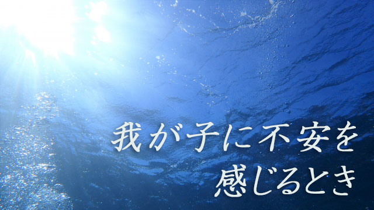

子どもの悩みは尽きない。
「いつもダラダラしてる。」
「試験前なのにちっとも勉強してくれない。」
「ウチの子ほんとうにヤル気があるのかしら。」
「このままだと将来どうなってしまうのか。」
こんなふうに親はいつもヤキモキしている。
焦り、苛立ち、不安、心配、ついには怒り。
こうして思春期の子をもつ親の心は
いつも揺らいでいる。
あなたもそうかも知れない。
こんなとき親は視点を変えてみたほうがよい。
子どもにばかり向かっている注意の矛先を内側に向けてみること。
自分の心の中にある、不安や心配、焦りや苛立ちは本当に子どものせいなのかどうか。
その心配や不安焦りに実体はあるのか。それらはどこから来ているのか。
こうして自己の内面を冷静に探ってみれば
それらの揺れる感情はもっと深いところからわき起こっていることに気づくだろう。
自己の内側に深く降りていき
意識の光で暗闇を照らすように探ってみる。
考えるのではない。
じっと意識の光を当てるだけ。
そこにボンヤリと浮かび上がるものを感じてみる。
何が見えるだろう。
何が浮かぶだろう。
日ごろ我が子を見て感じる不安、心配、焦り。
そこからいったん「子どもの問題」を外して、それらの感情のみを純粋に感じてみよう。
すると何が浮かび上がるか。
遠い日の記憶の一コマかも知れない。
幼いころの親とのやり取りや周囲との人間関係。
そこで言われ続けてきた多くの言葉。
いつの間にか信じ込んでしまった人間や社会のルール、そこから外れることへの恐怖。
これまで生きて来るなかで味わった悲しみ、失望、後悔、不安、焦り…。
さらにはもっと根源的な感情も浮かぶかも知れない。
こうして私たちは、負の感情を根底に抱えて生きているが、心を観察せず無自覚なままでいると目の前の「現実＝できごと」にその原因を見てしまう。
私たちは出来事→感情 と考える。
他人にイヤなことを言われた→不快感 のように。
だが真実は逆で、不快感→出来事 なのだ。
不快感を持っているから、あるいは何らかの否定的感情を持っているから他人の言動に傷つくのだ。
出来事それ自体は自分の感情に気づくきっかけに過ぎない。
不安や焦りの気持ちが先にあり、それを子どもが「勉強しない」ことに結びつけてしまう。
同じ出来事があっても不安や焦りを感じない人もいる。他人から同じ言動をされても動じない人もいる。
目の前の出来事自体は原因ではない。どんな感情を抱えているかであって、出来事はその感情に気づくきっかけだということ。
目の前の「子どもが勉強しない」という映像を見て不安なら、いま自分は不安を抱えていることに気づくことで出来事は中立（ニュートラル）になる。
このように因果を逆転させると不思議な安堵に包まれる。
なぜなら私たちは目の前の現実に振り回される必要がないことに気づくからだ。
出来事はあくまで中立であって、そこに良い悪いの判断を下して心を揺らせる必要がないと分かるからだ。
これは、逆に言うと希望である。
とかく私たちは出来事を悲観的に見てますます問題を固着化させてしまう。
だが、それは自らの負の感情の投影であることに気づき中立の位置に立つことによって、事態を良い方向へ導くことができるからだ。
「子どもが勉強しない」と騒ぎ立てるほど子どもはますます親の望みと反対方向へ駆け出してしまう。
「これは自分の恐れ、不安、焦りを子どもに投影しているのだ」と気づくだけで現実は好ましいほうへ変わるということ。
そのことはたくさんの親子を見てきて確信できる。
その他多くの人間関係や物事にも応用できる。
外側に原因を求め外側の出来事を問題視する姿勢を止め、自己の内面の囚われに気づくことで現実というスクリーンの映像も変わる。
悲劇的ストーリーから幸福な物語への転換。
これは決して夢物語ではない。
自己を観察し囚われを手放す。そして出来事を本来の中立な状況に戻し偏りのない目で眺める。そうすれば適切な行為が自ずと起こる。
結果として現実は好転するということです。